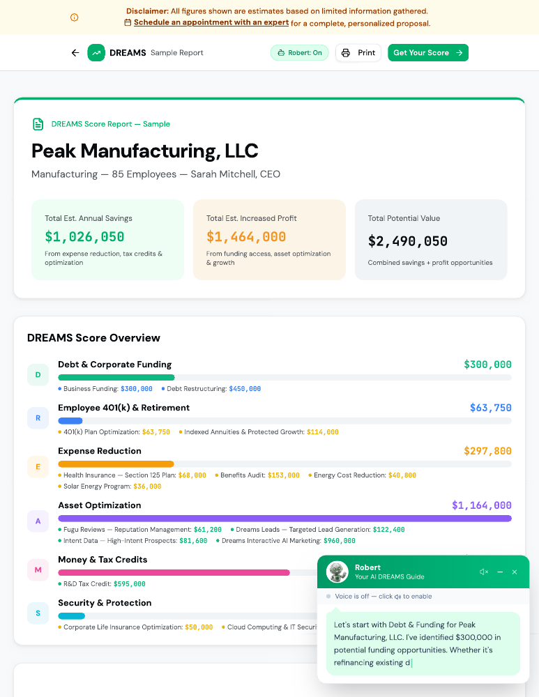

THE PROFIT MARGIN OPPORTUNITY
Improve
profit margins.
Review benefits, technology, energy, and other operating costs. Identify potential overpayments and areas worth a closer look.
Explore the financial impact →A FRESH PERSPECTIVE ON YOUR BUSINESS
Find opportunities to improve profit margins, retain quality employees, and build a more valuable business with a DREAMS Score conversation.
FOR BUSINESS OWNERS · CEOs · CFOs
BETTER QUESTIONS. BETTER BUSINESS DECISIONS.
THE PROFIT MARGIN OPPORTUNITY
Review benefits, technology, energy, and other operating costs. Identify potential overpayments and areas worth a closer look.
Explore the financial impact →THE PEOPLE OPPORTUNITY
Revisit the benefits and retirement experience you offer. Align value for employees with a sustainable cost for your business.
See the people perspective →THE GROWTH OPPORTUNITY
Explore capital, marketing, AI, and protection gaps together—so the next decision fits the bigger business picture.
Discover the six lenses →SIX PLACES TO LOOK. ONE BIGGER PICTURE.
Move the sliders or enter your own amounts. Explore how several opportunities together could help improve profit margins.
Explore a potential annual R&D credit, subject to yearly eligibility.
Enter potential annual payroll tax savings.
Review what your business pays for employee health benefits.
Look at software, cloud, phones, and connectivity costs.
Explore opportunities in energy and utility spending.
Add distinct operating savings not counted above.
WATCH YOUR OPPORTUNITIES ADD UP
Annual benefits × your multiple
Recurring opportunities per year
Hover, tap, or focus a bar for its value. Both charts start at $0 and have their own labeled scale. R&D credits are included under the recurring-benefit assumption.
THE POSSIBLE IMPACT, IN PLAIN ENGLISH
Annual recurring savings + potential annual R&D tax credits.
Payroll tax savings plus the four types of overpayments.
Modeled as recurring each year when eligible activities and requirements continue.
$130,000 in annual savings + credits × 5× benefit multiple
Illustrative value increase = annual operating savings plus recurring R&D credits, multiplied by your selected multiple. This assumes both benefits continue and are valued at the same multiple.
This is a simplified recurring-benefit scenario, not an EBITDA valuation or an appraisal. R&D income-tax credits do not increase EBITDA. Their actual value depends on eligibility, usable amounts, duration, and buyer treatment. Fees, tax effects, and implementation costs are excluded.
Several smaller opportunities can add up to a meaningful difference.
Explore DREAMS Score ↗Illustration only. All six amounts are modeled as annual recurring opportunities. R&D tax credits and payroll tax savings require eligibility review each year; availability and amounts may change. Enter distinct amounts to avoid double counting. Timing varies, and figures exclude fees, implementation costs, and tax effects. No savings or credit is guaranteed.
FROM “WHAT IF?” TO “WHERE DO WE LOOK?”
Your DREAMS Score brings six business areas into one opportunity map. Use it to decide where a deeper specialist review could be worthwhile.
Connect funding, benefits, expenses, assets, tax credits, and protection in one place. The report makes it easier to see where to focus.
20-page sample · PDF · Estimates are illustrative and require specialist validation.

YOUR PEOPLE ARE PART OF THE EQUATION
Cost discipline and a compelling employee experience belong in the same conversation.
Explore DREAMS Score ↗Examine coverage, affordability, and how the available benefits are communicated.
Review plan design, participation, and the experience for both employees and the business.
Identify key-person and continuity questions before they become urgent business problems.
A SMALL FIRST STEP. A MUCH WIDER VIEW.
A complimentary 15-minute initial conversation is a starting point—not a full audit. The deeper work follows the opportunities that fit.
What is putting pressure on profit margins? Where are employee costs or growth getting harder?
Look across the six DREAMS areas and identify the questions most relevant to your business.
Review the details, eligibility, costs, and trade-offs before deciding what to implement.
SIX LENSES. ONE CONNECTED PICTURE.
Explore the six areas behind the assessment. Different lenses reveal different questions worth asking.
01 / CAPITAL & CASH FLOW
Could a different capital structure support your next move? Examine funding needs, existing debt, and cash-flow priorities.
Is your financing supporting the business you want to build next?
Concept illustrations. Charts and figures within the artwork are not measurements of your business.
BEFORE YOU TAKE THE NEXT STEP
No. The starting amounts are an example, not an estimate for your business. The calculator adds the annual recurring savings and R&D tax credits you enter. It assumes the selected amounts continue when annual eligibility requirements are met. Specialists must confirm eligibility, timing, costs, and the actual financial impact.
You can bring the opportunity discussion to your current CPA, benefits adviser, or leadership team. Use it to ask better questions and determine where additional expertise would be helpful.
Start with your priorities and a general picture of your business. If a deeper review makes sense, the appropriate specialist can explain which records are needed and how to provide them.
The initial DREAMS Score conversation is presented as complimentary and without obligation. Any later service, product, or implementation should be reviewed separately for pricing, terms, and suitability.
YOU DON’T NEED ANOTHER GENERIC PITCH.
Start with your business. Your people. Your priorities.
Let’s find the questions worth answering.